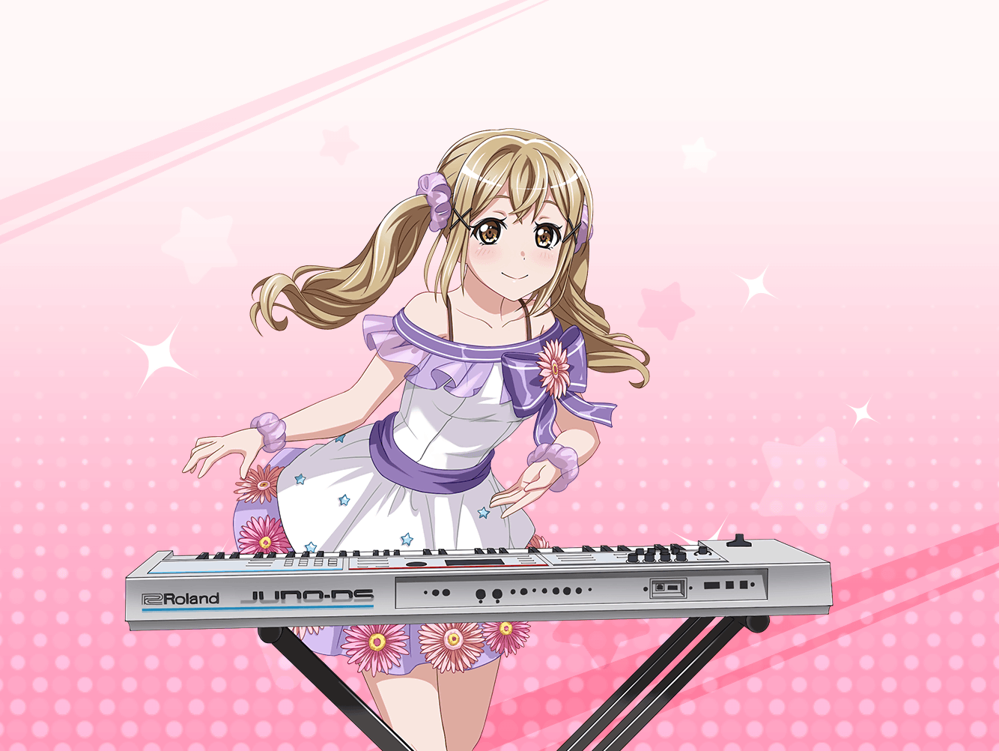

有咲
へぇ……
今はこんなのが売ってるのか
有咲
お、このキーホルダーいいな
沙綾
有咲？
有咲
ん？
ああ、沙綾か
沙綾
有咲も買い物？
有咲
私は暇つぶし。
やることないから、ふらっと寄ってみたんだよ
沙綾
なるほどね～
……あ、このキーホルダーかわいいね？
有咲
うん。同じこと思って見てたとこ
沙綾
お、趣味が合うね〜。
んー、でもちょっと使いづらそうだね……
有咲
まぁ、確かに……。
このケーキがモチーフのやつとか特に……
有咲
……あ
沙綾
有咲？ どうしたの？？
有咲
いや、ケーキを見てこのあいだの
バースデーライブを思い出してさ。
ハァ〜……あれも大変だったなあ
沙綾
あはは。まあ、大変だったけど楽しかったし、
うまくいってよかったよね
沙綾
これも、
みんな、一生懸命頑張った結果だね
有咲
ま、そーだな。
一生懸命っていうか、もはや必死だったな
有咲
曲の練習は実質３日くらいだったしな。
……ま、私たちよりりみのほうが大変だと思うけど
沙綾
でも、苦労した分だけ
私達の絆は深まったんじゃない？
有咲
き、絆が深まった……？
そ、そーゆーのやめろよな！ なんか、ソワソワする！
沙綾
あれ？
もしかして有咲〜、照れてる？
有咲
ばっ！！
照れてねーよ！
沙綾
はいはい。
本当に、有咲はかわいいなあ♪
有咲
くっ……！
有咲
はぁ……
しかし、我ながらよく一週間で
全てこなすことができたよ
沙綾
そうだね。
自分でもビックリ
沙綾
一週間で曲を作って演奏までもっていくって
決めたとき、有咲はどう思った？
有咲
そうだな〜……ま、無理じゃね？ って思ったよな
沙綾
あはは。有咲は最初は反対してたもんね。
その有咲が賛成した決め手はなんだったのかな〜？
有咲
ハア……沙綾って、たまにそういうことあるよな……
沙綾
ふふっ。ごめんごめん。
りみりんがあんなに一生懸命な様子じゃ、
私達も支えなくっちゃ！ って思って当然だよね
有咲
そーゆーコトだ
有咲
曲が完成したら
それを練習するために、蔵で寝泊まりしたり……
なんか、とんでもない一週間だったけど……
有咲
確かに、ライブの後に聴いてくれた
観客全員の顔を思い出すと……悪くない、一週間だったな
沙綾
でしょ？
有咲
ただ、疲れたけどな
沙綾
あー……それは、間違いない
沙綾
けど、また、みんなであんなライブしたいね
有咲
ライブするのはいいけど
もう、一週間で全てやるのは勘弁だー！
沙綾
……といいつつ、有咲はいざとなったら踏ん張るからな〜。
なんだかんだ協力してくれるんだろうなあ
有咲
ああもう、沙綾ー！
沙綾
あははっ